关羽虚影 · 延续原模型精修
宽腹偃月刀、青龙吞口、斜向握持、腿甲与甲裙、长髯、赤面和披风固定结构。没有增加战斗玩法，也没有覆盖游戏存档。
刀头投影面积比上一版增加 32.7%；刀杆外倾 12°、前倾 7°。保留 9 格神将体量，刀头朝上，配重离地。握拳内部最小半径 0.096 格，刀杆中心准确穿过握持空隙。
实际游戏着色器离屏渲染
使用当前模型和项目生产着色器；不是游戏内截图。世界光照、虚影透明度及动态效果仍需进游戏确认。
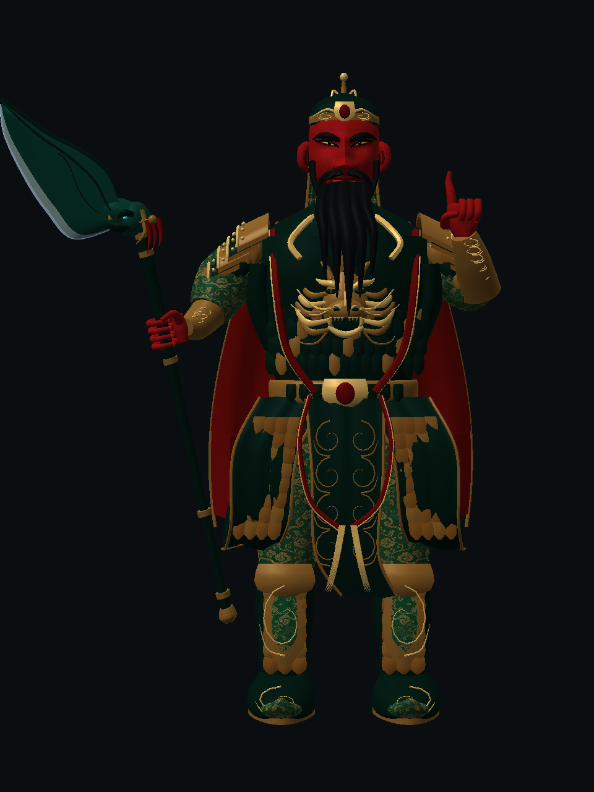
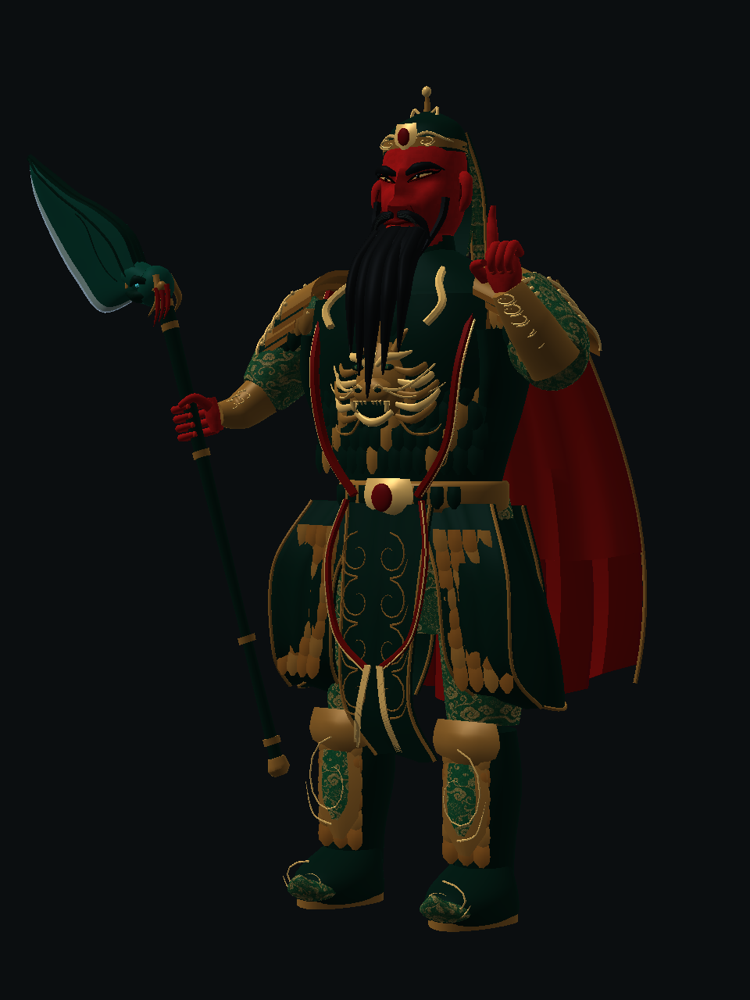
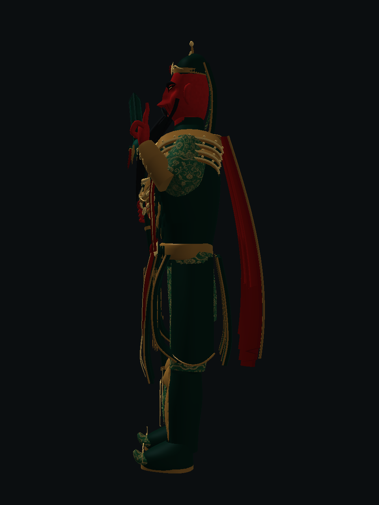
六面几何检查 · 正面 / 双侧面 / 背面 / 双斜面
无材质厚度检查
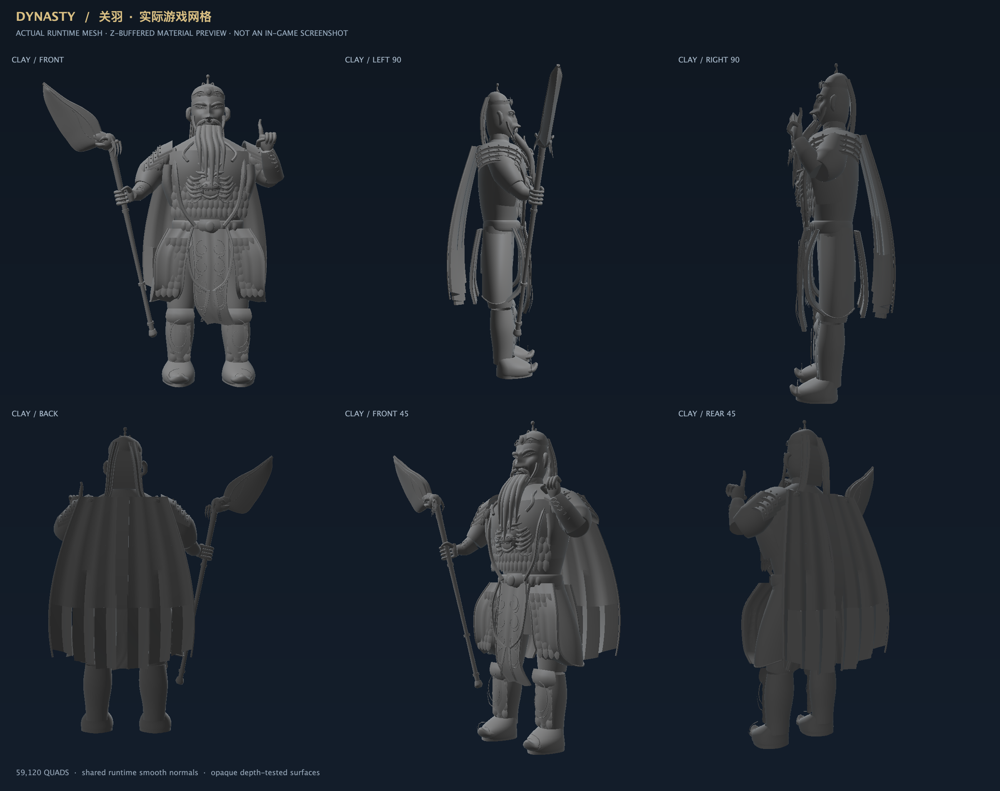
纯黑剪影检查
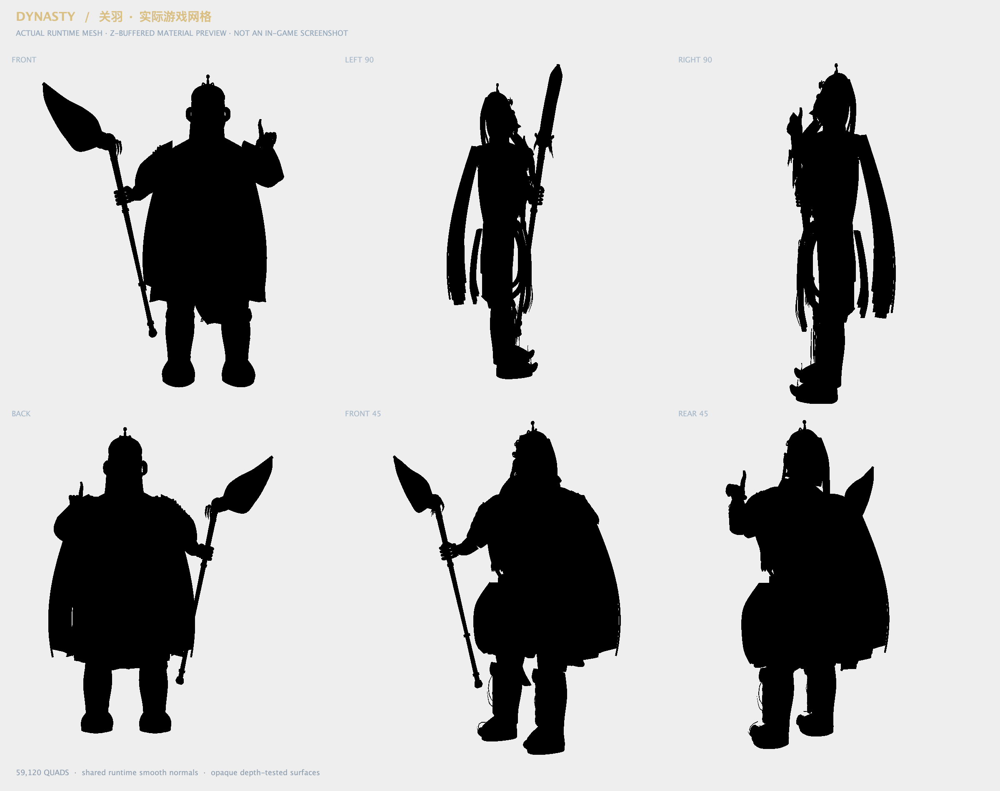
逐项过程
每一步均保存同一组角度，不用概念图代替实际模型。
1 刀头 / 2 青龙吞口 / 3 刀杆
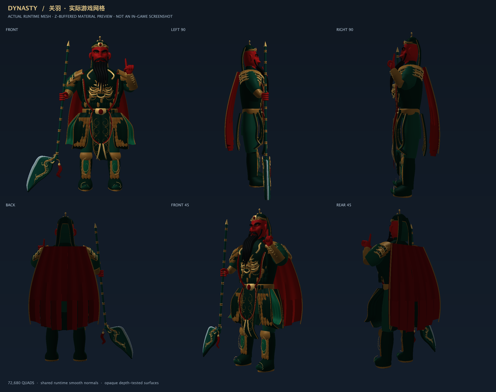
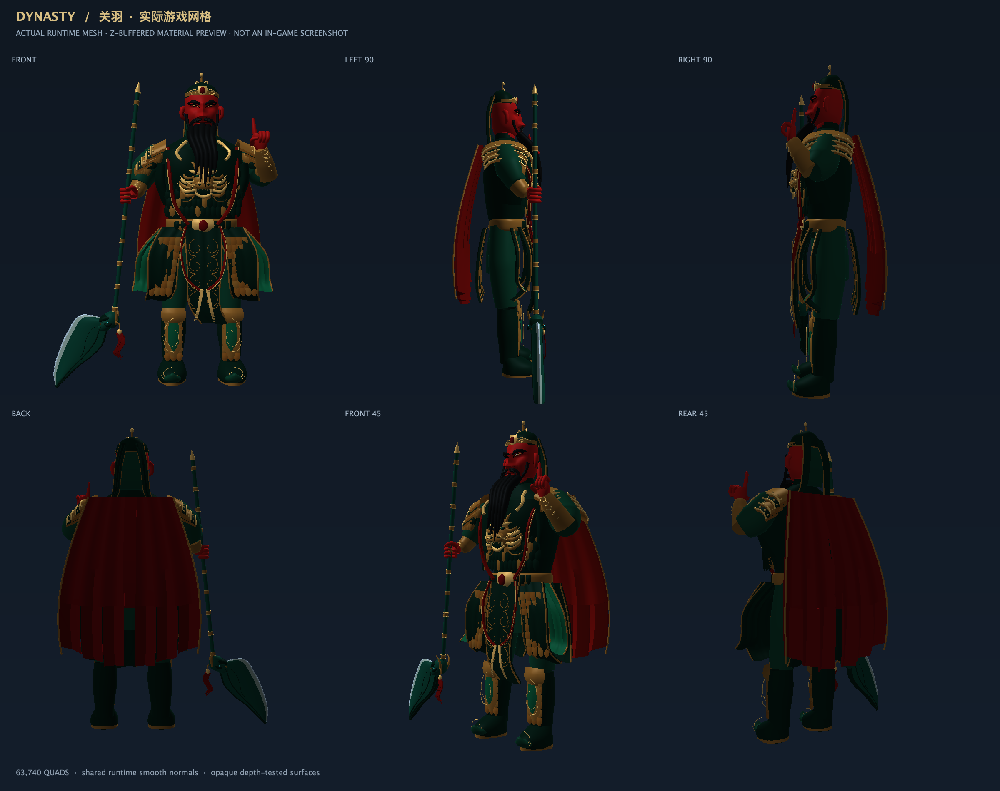
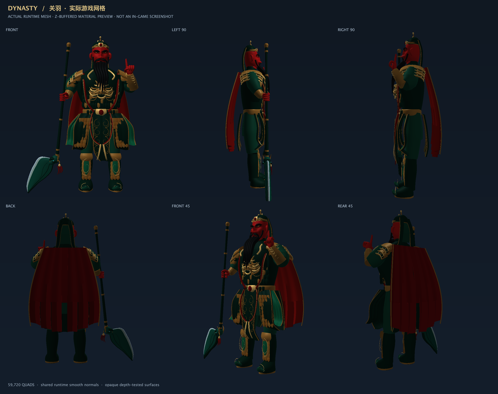
4 倾斜刀姿 / 5 重新握持
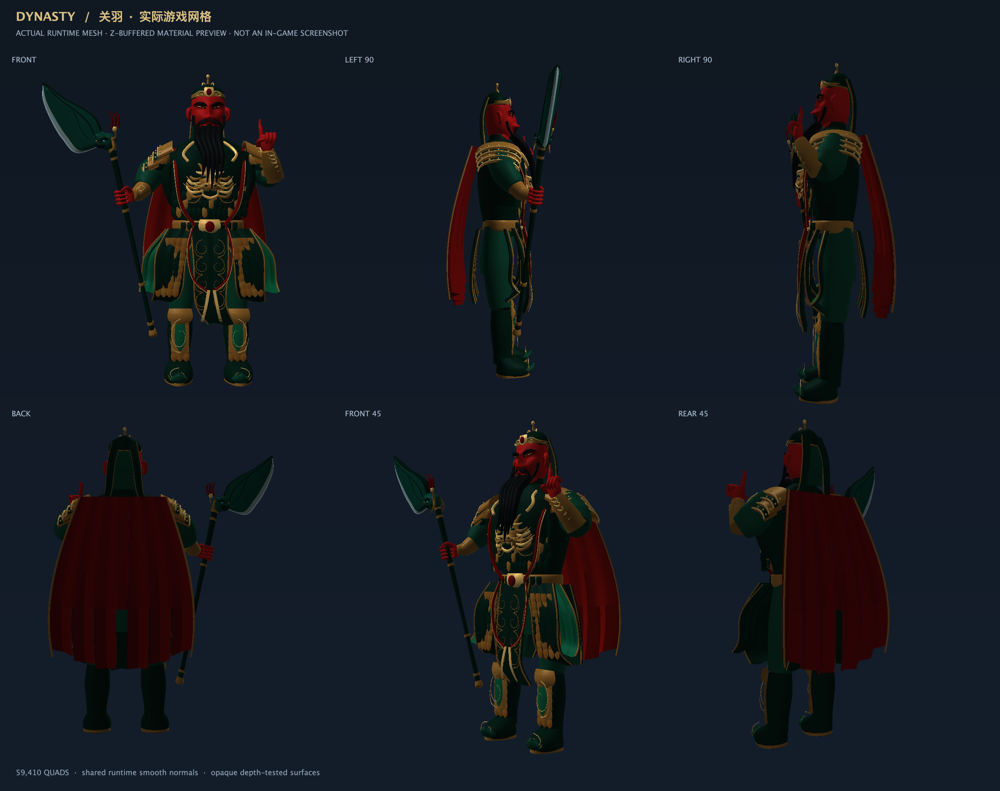
6 下半身 / 7 甲裙 / 8 长髯
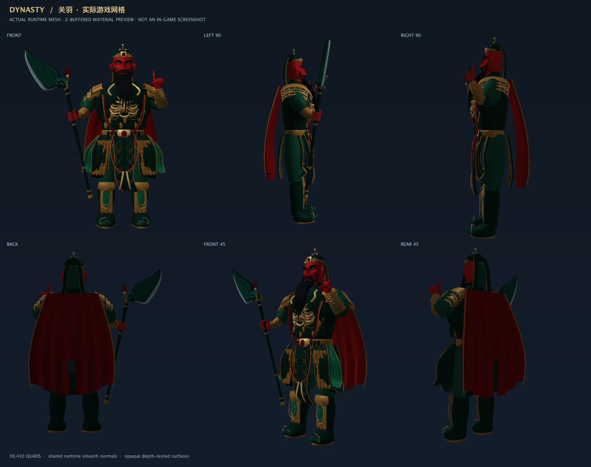
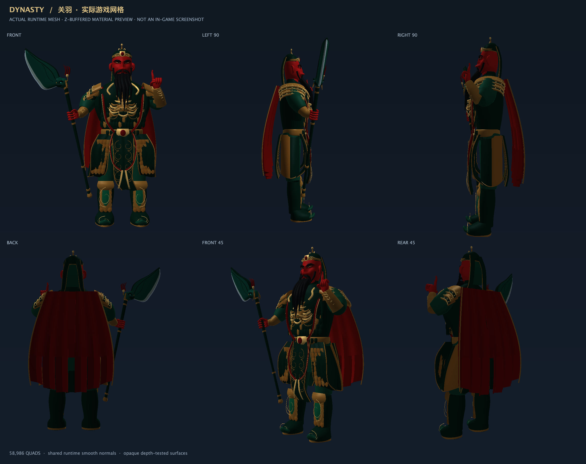
9 面部 / 10 披风扣
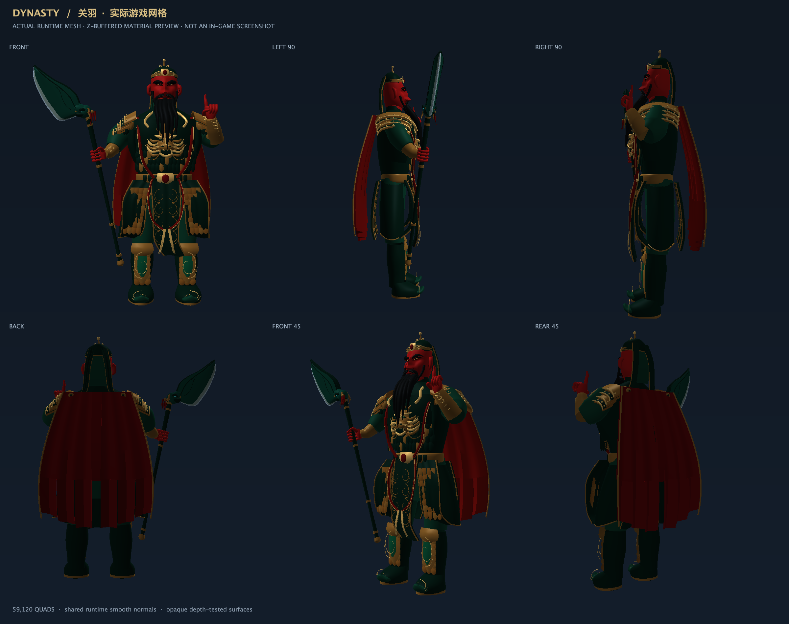
验收范围
59,120 个四边形。编译、模型有限值/法线、握持轴、握拳空隙、武器与非握持身体表面穿插检查通过。生产着色器可加载并完成 GPU 绘制。以上不等同于已完成游戏内视觉验收。
游戏测试：更新构建的模组后，主手持青龙偃月刀，等待虚影出现，F5 检查正面、45°及侧面，重点看握持处和刀背厚度。